I lead design teams through ambiguous, high-stakes product work. The
kind where the strategy isn’t settled and the path forward
has to be built, not found. Currently head of design at
Iterable. Based in Raleigh, NC.
I’m currently working remotely as the head of design at
Iterable, a
marketing automation platform, where we help brands better communicate
with their customers. It’s an exciting space, with all sorts of
interesting challenges around AI, big data, and tools for creation. I
love getting to work with technology that’s human-centered, makes
people’s jobs easier, and amplifies their creative potential.
At Iterable, I’ve scaled the design team, built our research
and design systems practices, led complex AI and modernization efforts,
and helped shape a multi-year product vision.
Prior to that, I was the design director at
thoughtbot’s
Raleigh studio, where we built custom web and mobile applications for
our clients around the Southeast.
I’m a full-stack generalist with a bias for clarity, momentum, and
thoughtful systems. I care deeply about craft, continuous learning, and
building cultures where people feel empowered to do their best
work, especially in distributed environments.
A few nice things colleagues have shared
“Christian is a seasoned leader who takes initiative before any is
requested. He has stepped into very ambiguous strategic conversations
with great confidence. Through his leadership and facilitation we are
able to come to critical clarity. I believe Christian is one of the
most thoughtful partners across the org when it comes to distilling
key components of strategic thought specific to our platform and in
collaboration across the org.”
“Christian helps me feel more confident and inspired to take
more risks in my work”
“Over the past year, Christian has done a uniquely impressive
job steering Iterable toward the future. He led our new design system
creation, spearheaded scaling our user research approach, led new
product concepts design sprints, championed product design principles.
He keeps the team aligned, cuts through ambiguity, approaches
challenges with a smile and kindness for everyone around him. He's a
secret weapon, and we're lucky to have him.”
“There are so many areas where I feel Christian truly excels in
his role, but the number one thing has to be his ability to empower
the people he manages. As director of product design, his ability to
empower the product design team is what has made all of the UI/UX
improvements possible and it's why we continue to see an influx of
customer compliments about our product's usability. His leadership and
genuine care for the people and products he oversees comes through in
every meeting and every decision he makes. Even through our current
turbulent times, where he's having to manage more than ever, he
continues to excel and pushes us all to be better each and every day.
Iterable is lucky to have Christian and I'm lucky I get to work with
and learn from him.”
“You are the most thoughtful and talented design leader I've
worked with yet—truly a design role model. Your ability to care deeply
about both the work and the people behind it is something I'll carry
forward. I'll be leaving with so many lessons from you—about craft,
leadership, and the impact of design at an organizational level.”
“Christian, your ability to lead, critique, design, and produce
is incredibly impressive. There is no doubt that you're at least 50%
of the success of the office.”
“Christian's superpower is his ability to genuinely listen to
ideas coming from other folks, and give them a fair shake-even if they
don't work out, or if he doesn't agree.
He's so good at making people feel seen and heard-not because it's
some kind of trick he's good at, but because he's genuinely interested
and curious in ideas that aren't his own.”
Shaping the Iterable Vision
Defining where the product was headed and
getting the whole company behind it.
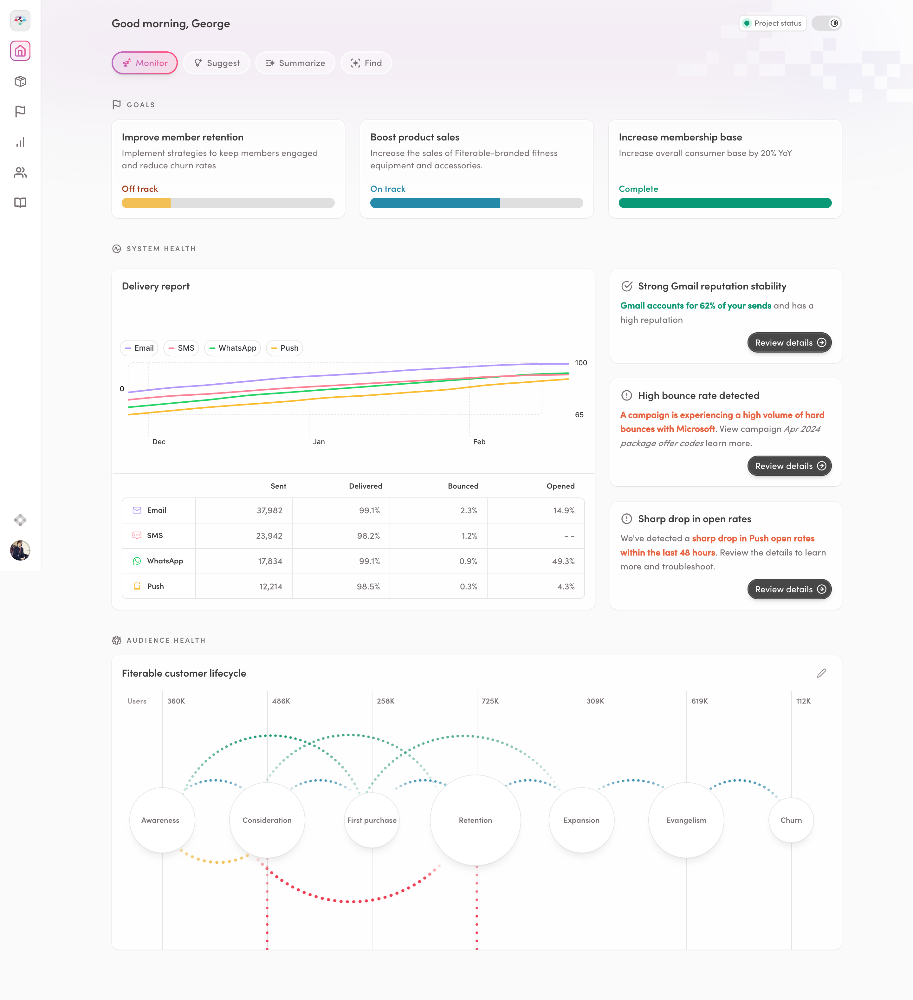
Iterable needed a product vision. The industry was shifting fast,
teams were pulling in different directions, and leadership didn’t
have a shared picture of where we were going. I took that on.
The goals were straightforward:
Get executives aligned around a single, customer-centered direction
Give the company something concrete to rally behind
Position Iterable as an AI-first platform in the eyes of the market
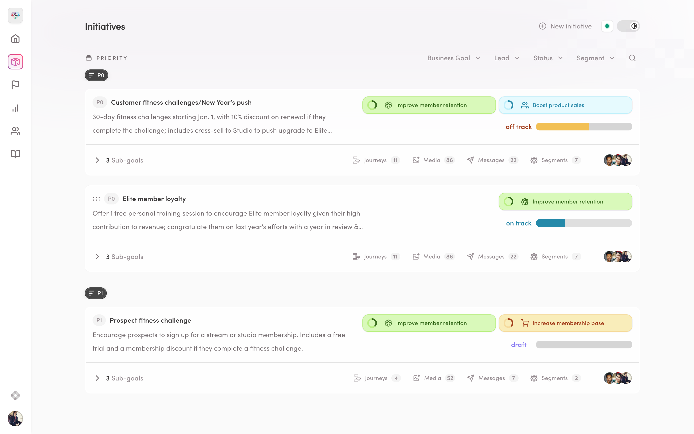
I put together a working group: our CEO, SVP of Engineering, SVP of
Product Marketing & Partnerships, and our SVP (later VP) of
Product. On the design side, I worked closely with a UX researcher
and a principal designer. We went through dozens of working sessions,
testing ideas, throwing things out, building back up. It took months.
The centerpiece was a live, in-browser prototype: a concept
experience that tied together AI, automation, personalization, and
scale into something you could actually click through. We demoed it
at our fiscal year kickoff and later shared it publicly at our
customer conference with over 1,000 attendees.
One of my proudest moments was presenting the vision on-stage to the
entire company, then sitting on a live panel alongside our CEO, VP of
Product, and SVP of Engineering.
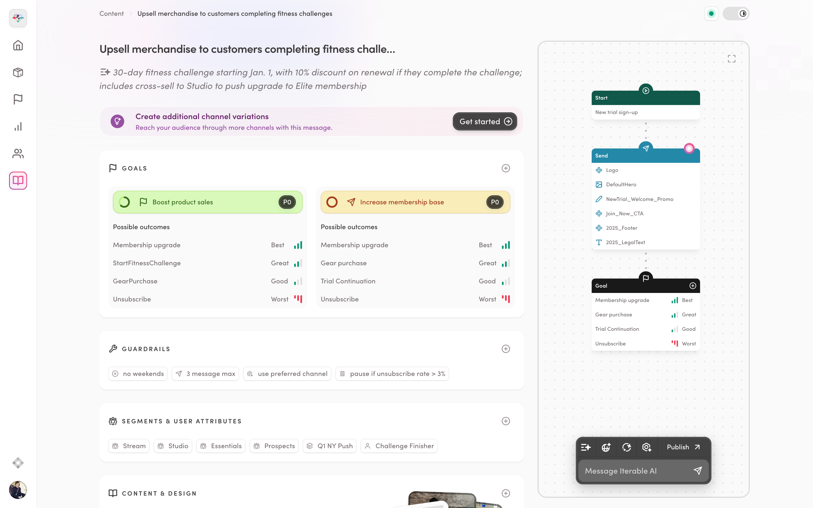
What came of it:
A reorg that dedicated R&D resources to long-term strategic work
Real alignment across product, engineering, and go-to-market, not just stated alignment
Employee sentiment around leadership vision went up 21 percentage points
Customer and market interest, including
press coverage
and conversations with strategic accounts
This project reminded me of something I believe about design:
its most powerful use isn’t pixels. It’s helping a
company see a future worth building toward.
Designing for AI
Three AI features I helped ship, from
early predictive models to the market’s first generative
journey builder.
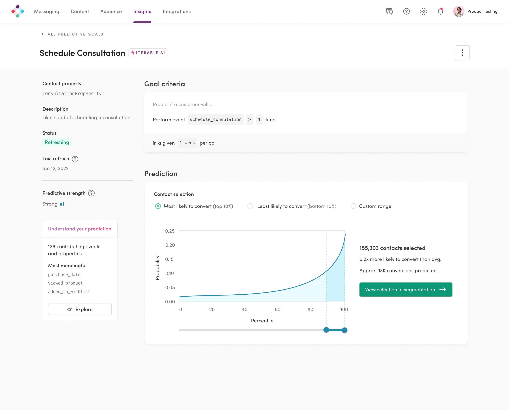
Predictive Goals was one of our earliest AI
features. It forecasts how likely someone is to convert on a goal,
so marketers can target their messaging better.
The idea came out of a design sprint I ran with data scientists,
PMs, engineers, and subject-matter experts. I led the MVP design
and validated it with customers. The main challenge was how to
surface predictive data without overwhelming people or asking them
to trust a black box.
Redfin saw a 72% lift in converting sellers to an active state.
BIG4 Holiday Parks reported a 156% boost in conversions. The
feature is now core to how many of our customers plan campaigns.
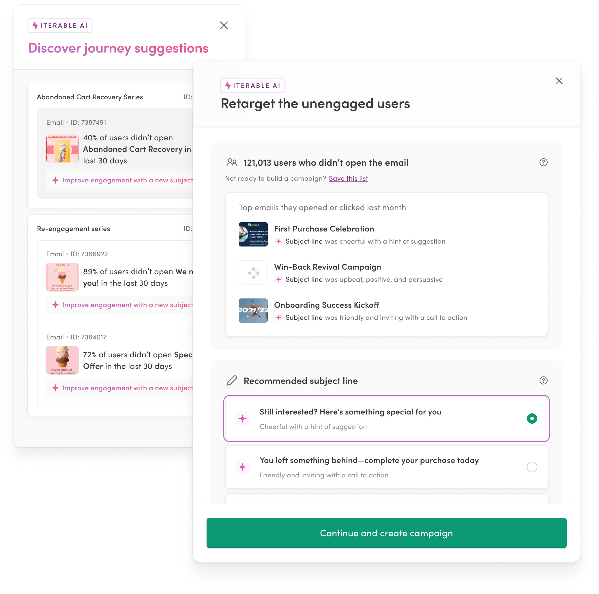
Next Best Action finds underperforming journeys and
recommends specific ways to re-engage audiences. It turns AI
insights into something a marketer can actually act on.
I was the primary design stakeholder. My focus was making sure the
recommendations felt useful rather than noisy, and that the whole
thing fit naturally into existing workflows. I shaped early concepts,
gave ongoing feedback, and held the quality bar through launch.
Iterable’s AI Suite is the cherry on top, offering Predictive Goals,
Next Best Action insights, and Send Time Optimization to engage the
right users at the perfect moment. Iterable is proof that
personalization isn’t just a buzzword; it’s the future—and it’s
already here.
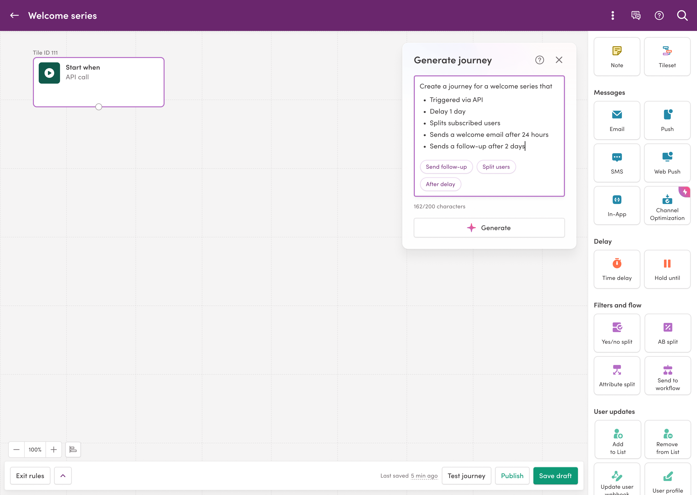
Journey Assist is the market’s first
generative AI-powered journey builder. Marketers describe what they
want in plain language, and it generates a journey map they can
refine from there.
I was executive sponsor on this one. That meant regular design
reviews, working with the team on customer research, and doing a
lot of high-fidelity prototyping to figure out what the right
experience actually was. The collaboration between our design and
DSML teams on this project was some of the best I’ve seen.
Iterable customers are seeing tangible ROI from Journey Assist,
including a 25% increase in conversions and a
10% boost in audience engagement. Customers like
Nextdoor and Cinemark have reported an average 15% reduction
in effort and substantial time savings when creating
complex customer journeys.
Modernizing Iterable’s UX
Rebuilding the product’s interface from the ground up:
new design system, new visual language. Without breaking what
customers already relied on.
Iterable’s UI had started to show its age. The product had
grown fast, but the interface hadn’t kept up. It was visually
inconsistent, hard to extend, and the design debt was compounding.
We needed a reset, but we couldn’t afford to alienate
customers in the process.
I led this initiative across design, engineering, and product. We
called it Aurora. The constraint was clear: modernize everything,
break nothing. That meant incremental rollouts, constant customer
validation, and preserving the interaction patterns people already
knew.
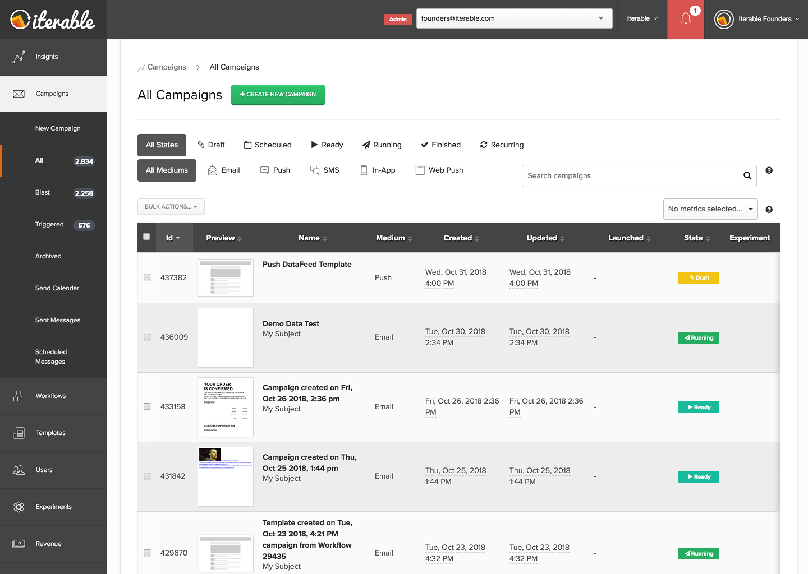
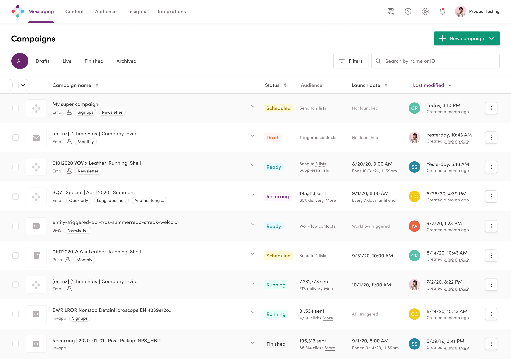
We rebuilt the UI from scratch: new design system, refreshed visual
language, better accessibility, less cognitive load in the key
workflows. But it was the approach that mattered as much as the
output. Every change was validated. We shipped incrementally. We
didn’t ask customers to relearn the product.
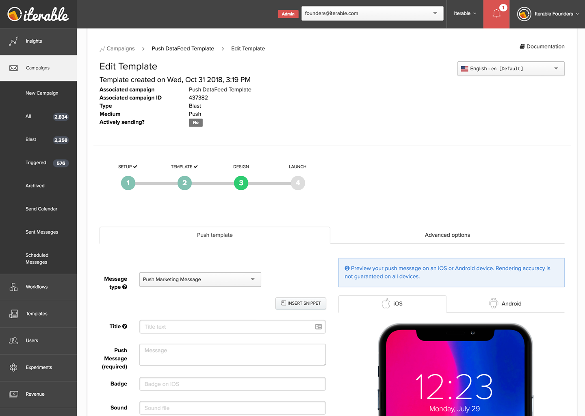
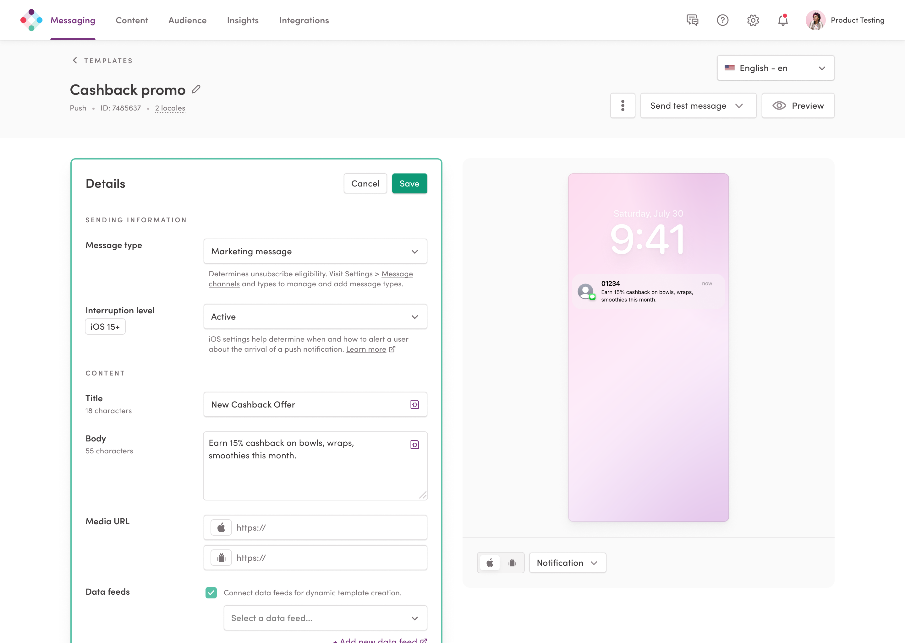
Beyond the visual work, Aurora changed how we operate. The design
system gave teams a shared foundation to build on. The bar for
craft went up across the org. And the work is ongoing. This
wasn’t a one-time project, it’s become how we think
about quality at Iterable.
Building a culture of trust
How I think about running a design team,
and why the culture matters as much as the work.
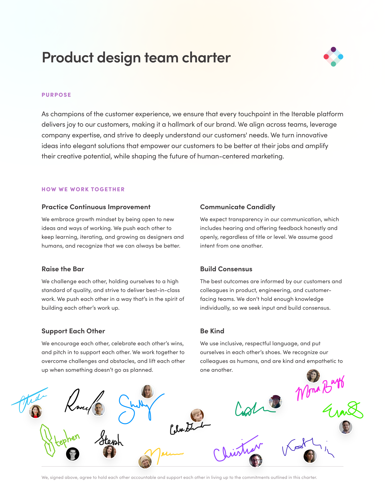
I believe the quality of the design work is a direct reflection of
how safe people feel on the team. If designers can’t disagree
openly, push back on bad ideas, or admit when they’re stuck,
the work will be cautious and average. So I’ve spent a lot of
time building a team where that kind of honesty is normal.
We wrote a team charter together: our shared commitments to each
other around candor, support, and quality. It sounds like a small
thing, but it gave us a shared language for how we wanted to work.
The result: a team engagement score of 100%, 21
percentage points above the company average.
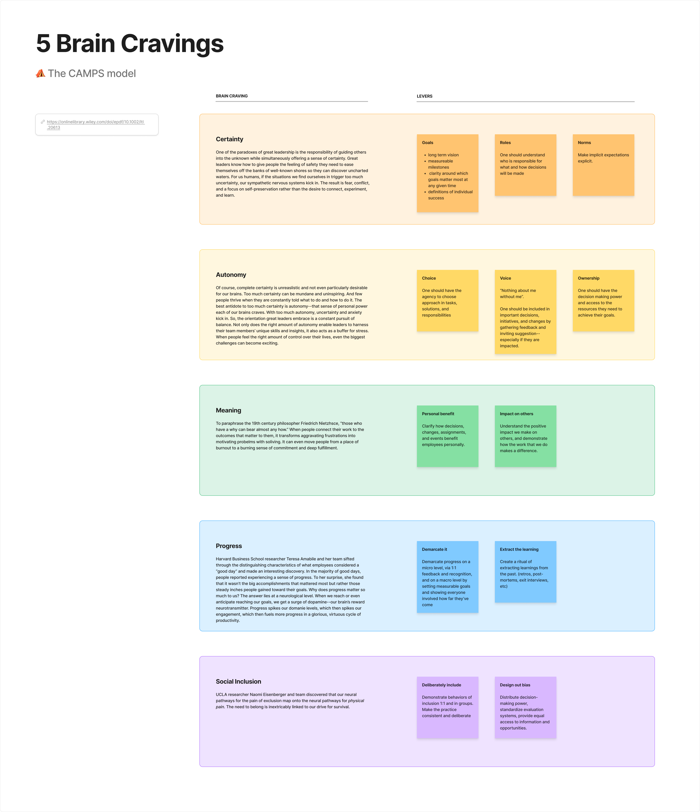
I also care about how the design team is perceived by the rest of
the company. I’ve worked hard to make us a reliable partner.
The kind of team that ships on time, communicates clearly, and
doesn’t create bottlenecks. That trust is earned through
consistency, not through decks about our process.
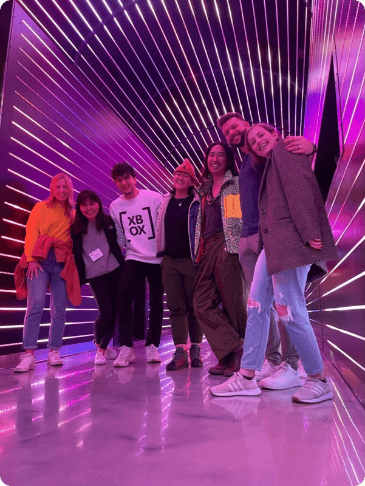
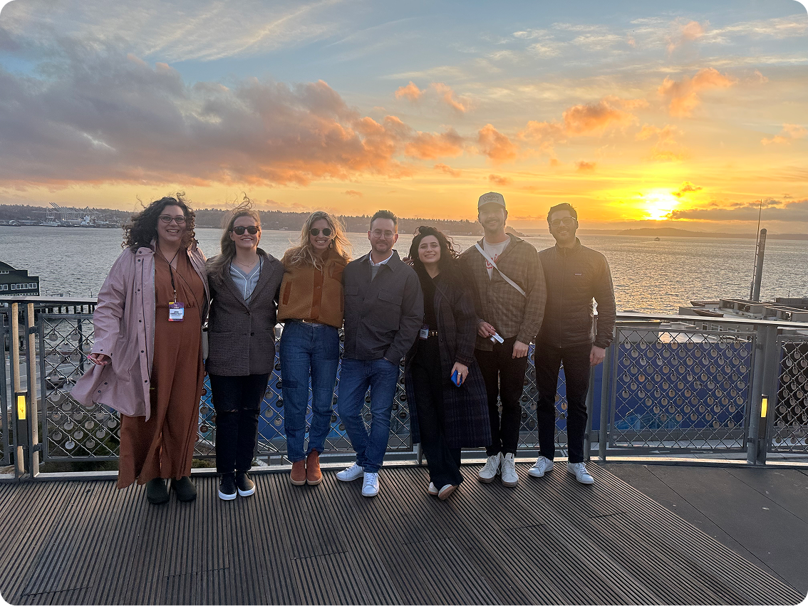
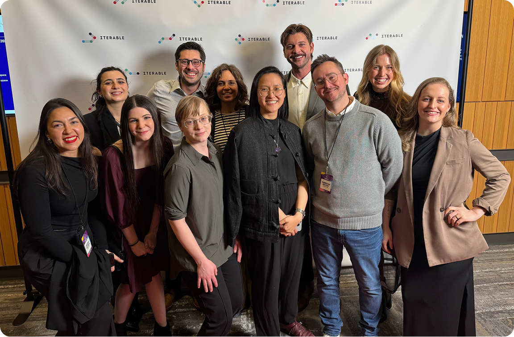
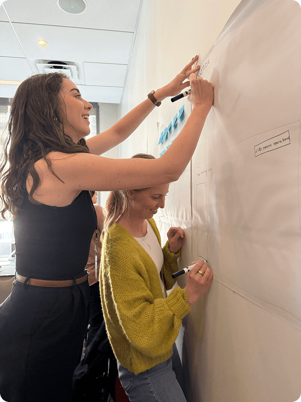
The culture we’ve built shapes the work in ways that are hard
to measure but easy to feel. The team holds itself to a high standard
because they want to, not because they’re told to. And that
shows up in the product.